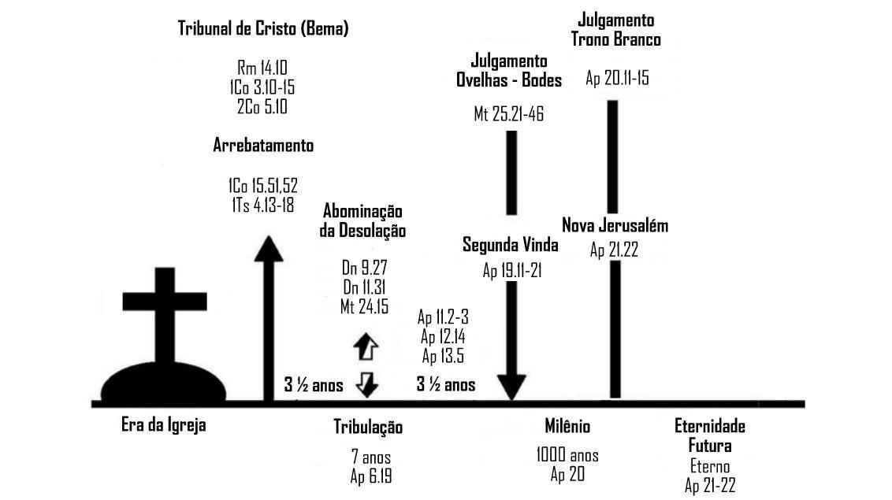

Lição 11:
A volta de Cristo
Versículo para decorar: Mateus 24:27
Livros da Bíblia: Zacarias, Malaquias.
Conceito da volta de Cristo
A segunda vinda de Cristo é o clímax da história, a consumação de todas as coisas. A história não caminha sem rumo nem está à deriva, ela caminha para a consumação, em que a vitória final será de Cristo Jesus e de Sua igreja.
O mesmo Jesus que nasceu em uma manjedoura, cresceu em uma carpintaria, morreu em uma cruz e ressuscitou gloriosamente está assentado no Trono à direita do Pai. Jesus reina Absoluto e Soberano sobre todo o Universo, e Ele voltará em majestade para julgar as nações e reinar com a Sua amada Igreja. Ao olhar para a Palavra de Deus e compará-la com os nossos dias, percebe-se o quão perto está de se cumprir essa promessa feita por Jesus. Os sinais profetizados por Ele estão se cumprindo ano após ano, e Sua vinda está bem mais próxima do que podemos imaginar.
1. De acordo com Atos 1:11, como será a volta de Cristo Jesus?
De que forma Cristo se apresentará em Sua segunda vinda?
Na Sua segunda vinda, Jesus virá como Rei exaltado (para reinar), Senhor dos senhores, Juiz de toda a terra (para julgar). Ele se assentará no trono, julgará as nações, e todo joelho se dobrará diante Dele.
2. Segundo os textos de Mateus 7:21-23 e Mateus 25:11-12, o que acontecerá com os falsos cristãos?
Pergunta para refletir
• Na sua opinião, o que o mundo apresenta como indícios da volta de Cristo?
Jesus voltará e não tardará
Todas as profecias a respeito da primeira vinda de Cristo se cumpriram literalmente. Da mesma forma, as profecias sobre a segunda vinda estão se cumprindo e irão se cumprir. Mas como Jesus voltará?
• Em primeiro lugar , Jesus voltará pessoalmente (Atos 1:11): “… esse Jesus que dentre vós foi assunto ao céu virá do modo como o vistes subir”.
• Em segundo lugar, Jesus voltará de maneira visível (Apocalipse 1:7): “Eis que vem com as nuvens, e todo o olho o verá”. Quando Jesus aparecer nas nuvens, com grande poder e glória, todas as pessoas, de todos os lugares, nos mais diversos fusos horários, verão o Filho do homem em Sua majestade e serão tomadas de perplexidade.
• Em terceiro lugar, Jesus virá visivelmente (Mateus 24:27).
1. Qual a esperança do cristão mediante as promessas feitas por Cristo sobre Seu retorno?
2. Conforme Mateus 24:30, qual sinal aparecerá no céu?
O arrebatamento
A palavra “arrebatar” significa “raptar, retirar com força, capturar”.
Expressando de forma bem simples, a doutrina do arrebatamento declara que no fim dos tempos acontecerão as seguintes coisas:
1. Primeiramente, os mortos fiéis a Deus serão ressuscitados e receberão um corpo glorificado (1 Tessalonicenses 4:13-16; 1 Coríntios 15:52);
2. Os vivos fiéis a Deus também terão o corpo transformado (1 Coríntios 15:52);
3. Tanto os mortos ressuscitados quanto os vivos transformados serão arrebatados até as nuvens (1 Tessalonicenses 4:17);
4. Acontecerá em um abrir e fechar de olhos (1 Coríntios 15:52).
Quando Cristo virá nos arrebatar?
Não sabemos o dia nem a hora. Porém, entendemos que isso se dará antes da volta de Cristo.
Questão para refletir:
• Leia 2 Pedro 3:10-13 e explique como será a volta de Cristo e como devemos nos comportar enquanto esperamos por esse maravilhoso momento.
Perguntaram para John Wesley: “O que você gostaria de estar fazendo quando Cristo voltar?”. “O que faço todos os dias”, ele respondeu. O cristão deve ser encontrado servindo ao Senhor com fidelidade e fugindo de toda aparência do mal. Nossa espera deve ser envolta de prudência, assim como as virgens que estavam preparadas para encontrar o noivo (Mateus 25:1-13).
Leia uma reflexão de Hernandes Dias Lopes sobre esse assunto:
“Quando Cristo veio ao mundo, os céus se cobriram de anjos. Quando Cristo morreu, os céus se cobriram de trevas. Quando Cristo voltar, os céus e a terra serão abalados. Os ímpios tremerão. É o dia da vingança do Deus todo poderoso. É o dia do juízo. Tudo que foi feito às ocultas virá à luz.
Naquele dia Deus julgará o segredo do coração dos homens. Os livros serão abertos. Não haverá defesa. Não haverá desculpas. Quem não estiver no livro da vida será lançado no lago do fogo.
Mas, para os remidos, será dia de glória. Dia de coroação. Dia de recompensa. Dia do banquete. Dia do consolo. Dia do descanso. Dia eterno com Jesus e para Jesus.
Oh, que dia glorioso! Maranata, vem, Senhor Jesus!”.
Diferentes posições sobre o arrebatamento
Pré-tribulacionismo
O Arrebatamento da Igreja (tanto dos vivos quanto dos mortos) ocorrerá antes do período de sete anos de Tribulação.
As razões para a crença nessa posição são:
a) A promessa de preservação “da hora da provação” de Apocalipse 3:10, associada ao anúncio da segunda vinda de Jesus em Apocalipse 3:11, sugerindo fortemente tratar-se do período da Tribulação.
O fato de Jesus não ter voltado na geração da igreja a quem se dirigiu tal promessa demonstra que se trata de uma esperança dirigida a toda a igreja (Apocalipse 3:13). Deve-se notar que o texto de Apocalipse 3:10 não afirma que os crentes serão guardados “na provação”, mas “da hora da provação”. Não significa ser fortalecido durante o sofrimento, mas sim não entrar nele.
b) Em 1 Tessalonicenses 5:1-11, Paulo afirma que apenas os incrédulos serão alvos do “Dia do Senhor” (1 Tessalonicenses 5:2), e não os crentes.
Quanto a esses, “Deus não os destinou para a ira” (1 Tessalonicenses 5:9). Apesar de esse texto poder ser compreendido, no âmbito geral, como se referindo à perdição eterna, o contexto imediato trata do juízo terreno chamado “Dia do Senhor”, o qual acometerá de surpresa os perdidos. Esse “Dia do Senhor” é associado ao período da Tribulação, para o qual, segundo o texto, os crentes não foram destinados.
Além disso, o fato de esse texto (1 Tessalonicenses 5:11) ser imediatamente posterior ao que fala do arrebatamento (1 Tessalonicenses 4:13-18) torna mais clara ainda a ideia de que a igreja, por meio do arrebatamento, será poupada do período da Tribulação, para o qual não foi destinada.
c) A completa ausência de menções à igreja nos relatos da Tribulação (Apocalipse 4–19).
d) A menção, em 2 Tessalonicenses 2:1-9, à remoção daquele “que agora o detém” antes do "Dia do Senhor” e da revelação do “homem da iniquidade”.
Meso-tribulacionismo
Defende que a Igreja será arrebatada no meio da Grande Tribulação. Sendo a Tribulação um período de sete anos, então haverá três anos e meio de paz e três anos e meio de muita dificuldade.
Pós-tribulacionismo
Defende que o arrebatamento e a segunda vinda de Cristo são dois eventos que ocorrerão ao mesmo tempo, após o período de grande tribulação. Segundo essa interpretação, a Igreja passará pela grande tribulação.
Pré-ira
Defende que o arrebatamento ocorre antes do "grande dia da ira" (Apocalipse 6:17). De acordo com essa visão, os crentes passarão pela maior parte da Tribulação, mas não pelo tempo da ira de Deus, que será bem antes do final da Tribulação (Mateus 24:21). A Igreja suportará a fúria de Satanás e a perseguição humana, mas será poupada da ira de Deus. Antes que Deus derrame Seu julgamento final sobre o mundo, a Igreja será levada ao céu.
Ordem cronológica dos acontecimentos
